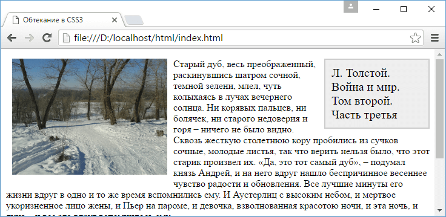

Обтекание элементов
Как правило, все блоки и элементы на веб-странице в браузере появляются в том порядке, в каком они определены в коде html. Однако CSS предоставляет специальное свойство float, которое позволяет установить обтекание элементов, благодаря чему мы можем создать более интересные и разнообразные по своему дизайну веб-страницы.
Это свойство может принимать одно из следующих значений:
- left: элемент перемещается влево, а все содержимое, которое идет ниже его, обтекает правый край элемента
- right: элемент перемещается вправо
- none: отменяет обтекание и возвращает объект в его обычную позицию
При применении свойства float для стилизуемых элементов, кроме элемента img, рекомендуется установить свойство width.
Итак, представим, что нам надо на странице вывести слева от основного текста изображение, справа должен быть сайдбар, а все остальное место должно быть занято основным текстом статьи. Определим интерфейс страницы сначала без свойства float:
<!DOCTYPE html>
<html>
<head>
<meta charset="utf-8">
<title>Обтекание в CSS3</title>
<style>
.image {
margin:10px;
margin-top:0px;
}
.sidebar{
border: 2px solid #ccc;
background-color: #eee;
width: 150px;
padding: 10px;
margin-left:10px;
font-size: 20px;
}
</style>
</head>
<body>
<div>
<div class="sidebar">Л. Толстой. Война и мир. Том второй. Часть третья</div>
<img src="dubi.png" class="image" alt="Война и мир" />
<p>Старый дуб, весь преображенный, раскинувшись шатром сочной, темной зелени, млел,
чуть колыхаясь в лучах вечернего солнца...</p>
<p>«Нет, жизнь не кончена в 31 год, – вдруг окончательно, беспеременно решил князь Андрей...</p>
</div>
</body>
</html>
В данном случае мы получим последовательное размещение элементов на странице:
Теперь на той же странице применим свойство float, изменив стили следующим образом
.image {
float:left; /* обтекание слева */
margin:10px;
margin-top:0px;
}
.sidebar{
border: 2px solid #ccc;
background-color: #eee;
width: 150px;
padding: 10px;
margin-left:10px;
font-size: 20px;
float: right; /* обтекание справа */
}
Соответственно изменится и размещение элементов на странице:
Элементы, к которым применяется свойство float, еще называют floating elements или плавающими элементами.
Запрет обтекания. Свойство clear
Иногда возникает необходимость запретить обтекания. Подобная задача может быть актуальна, если какой-то блок должен переноситься вниз на новую строку, а не обтекать плавающий элемент. Например, футер, как правило, должен находиться строго внизу и растягиваться по всей ширине страницы. Если же перед футером находится плавающий элемент, то футер может обтекать этот элемент, что не желательно.
Для запрета обтекания элементов в CSS применяется свойство clear, которое указывает браузеру, что к стилизуемому элементу не должно применяться обтекание.
Свойство clear может принимать следующие значения:
- left: стилизуемый элемент может обтекать плавающий элемент справа. Слева же обтекание не работает
- right: стилизуемый элемент может обтекать плавающий элемент только слева. А справа обтекание не работает
- both: стилизуемый элемент может обтекать плавающие элементы и относительно них смещается вниз
- both: стилизуемый элемент может обтекать плавающие элементы и относительно них смещается вниз
Например, пусть на веб-странице будет определен футер:
<!DOCTYPE html>
<html>
<head>
<meta charset="utf-8">
<title>Обтекание в CSS3</title>
<style>
.image {
float:left;
margin:10px;
margin-top:0px;
}
.footer{
border-top: 1px solid #ccc;
}
</style>
</head>
<body>
<img src="dubi.png" class="image" alt="Дубы" />
<div class="footer">Copyright © MyCorp. 2016</div>
</body>
</html>
Изменим стиль футера:
.footer{
border-top: 1px solid #ccc;
clear: both;
}
Теперь футер не будет обтекать изображение, а будет уходить вниз.